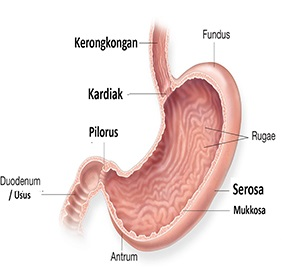

Lambung

Lambung merupakan salah satu organ penting di dalam sistem pencernaan manusia. Fungsi lambung bermacam-macam, mulai dari menampung makanan atau minuman, mengolahnya, hingga mendorong masuk ke usus untuk diserap dan diedarkan ke seluruh tubuh.
Lambung terletak di sisi kiri perut bagian atas dan ukurannya bisa berbeda pada tiap orang. Pada bagian atas, lambung tersambung dengan kerongkongan, sedangkan bagian bawah lambung tersambung langsung dengan salah satu bagian usus halus, yaitu usus dua belas jari.
Anatomi Lambung
Organ lambung memiliki ruangan yang berbentuk seperti balon dengan lima bagian utama, yaitu:
Kardiak
Kardiak merupakan bagian paling atas lambung yang berbatasan langsung dengan kerongkongan. Bagian ini memiliki otot yang berbentuk seperti cincin untuk mencegah isi lambung kembali ke kerongkongan.
Fundus
Fundus adalah area lambung yang terletak di sebelah kiri kardiak dan di bawah diafragma. Sel pada bagian fundus menghasilkan zat pepsinogen yang akan diubah menjadi enzim pepsin untuk mencerna protein di dalam makanan.
Badan lambung
Di dalam badan lambung, makanan yang masuk melalui kerongkongan akan mulai diproses dan dicerna. Tak hanya itu, asam lambung yang berfungsi untuk memecah makanan juga diproduksi pada bagian ini.
Antrum
Antrum merupakan bagian bawah lambung yang dekat dengan usus dua belas jari. Pada bagian ini, makanan akan bercampur dengan cairan lambung dan disimpan sementara sebelum didorong ke dalam usus dua belas jari.
Pilorus
Pilorus adalah bagian akhir lambung yang terhubung dengan usus halus. Bagian lambung ini memiliki katup yang berfungsi mencegah makanan dalam usus dua belas jari masuk kembali ke lambung.
Dinding lambung terdiri dari beberapa lapisan penyusun, antara lain:
Mukosa, yaitu lapisan terdalam lambung di mana cairan lambung dan enzim pencernaan diproduksi
Submukosa, yaitu lapisan lambung di atas mukosa yang memiliki banyak pembuluh darah, kelenjar getah bening, dan saraf
Proparia muskularis, yaitu lapisan ketiga lambung yang terdiri dari jaringan otot untuk membantu proses pencernaan makanan dalam lambung
Serosa, yaitu membran berserat yang menutupi bagian luar lambung
Fungsi Lambung dalam Sistem Pencernaan
Sebagai salah satu organ di sistem pencernaan, lambung mempunyai 3 fungsi utama, yaitu:
Menampung makanan
Setelah selesai dikunyah di dalam mulut, makanan akan ditelan dan melewati kerongkongan. Kemudian, makanan yang masuk melalui kerongkongan tersebut akan disimpan sementara, yaitu sekitar dua jam di dalam lambung.
Memecah makanan
Jaringan otot pada lambung bersama asam lambung dan enzim pencernaan akan memecah makanan menjadi partikel berukuran kecil agar lebih mudah diserap oleh tubuh. Tak hanya itu, pada proses ini lambung juga akan membunuh mikroorganisme yang mungkin terdapat di dalam makanan tersebut.
Mendorong makanan ke dalam usus
Fungsi lambung berikutnya adalah mendorong makanan yang telah selesai diolah agar bergerak ke dalam usus halus melalui pilorus. Usus halus kemudian akan melanjutkan proses pemecahan makanan dan menyerap nutrisi yang ada di dalam makanan tersebut ke dalam aliran darah.